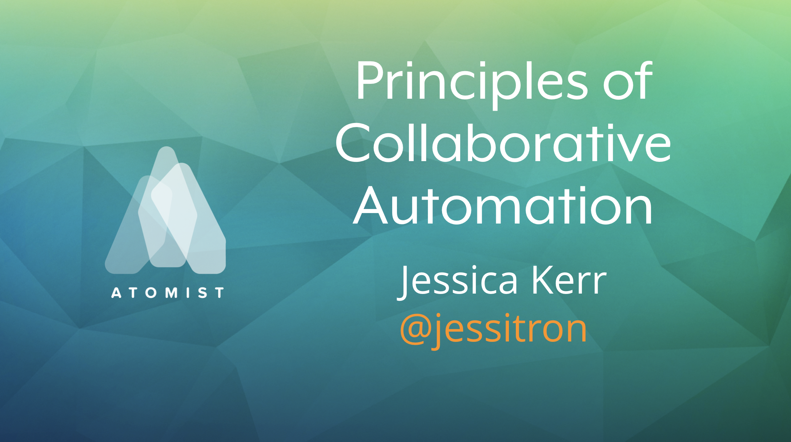
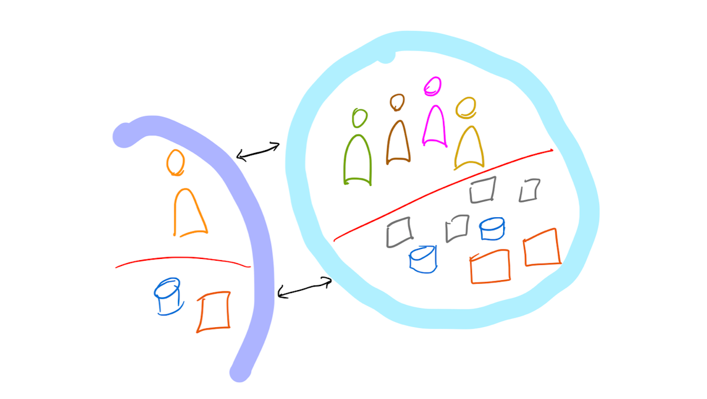
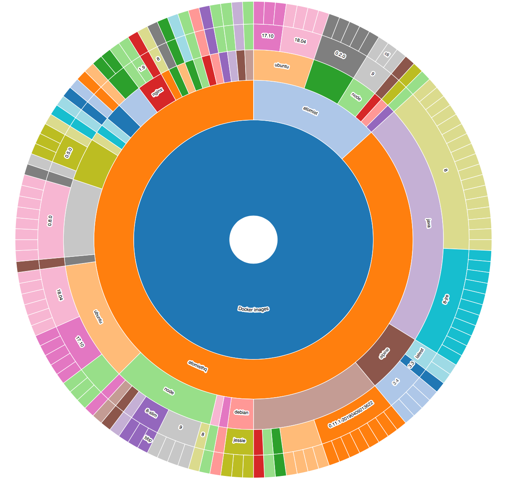

The Modern Delivery Platform

Automated Delivery for All of Your Projects
Evolve delivery flow in one place, not repository by repository. Get consistent, automated delivery across all projects with an event-driven Software Delivery Machine.

Visualize and Control the Entire Delivery Flow
Know the delivery state of all your projects, all the time. See all activity across your delivery flow, from initial commit through to promotion and verification in production. Take direct action when needed in chat or by issuing commands.

Self-Service
Make actions accessible with notifications and commands. Remove the friction of having to request resources, or the toil of setting up the delivery process yourself. Put the entire delivery process in front of you, so that you always have visibility and control.

Deployment Built-In
Deploy to your platform of choice in the cloud or self-hosted. Easy one-time setup to deploy to Kubernetes (whether you use Minikube, Google Kubernetes Engine, Azure Kubernetes Service, Amazon Elastic Kubernetes Service, RedHat OpenShift, Pivotal Container Service or open source Kubernetes), Cloud Foundry, ECS, Fargate and more.

Collaboration-Oriented Delivery
Chat-native interface makes your delivery process part of the conversation in Slack or Microsoft Teams. See delivery progress in chat and take action immediately: Merge a pull request, assign an issue, or approve a deployment. Atomist bot commands make it easy to create projects or initiate a deployment.

Fully Programmable Delivery That Evolves with You
Change your delivery by changing code. Whether you’re adding vulnerability scanning, pushing Docker images to a different artifact store, or adding your own bot commands your delivery process is completely programmable. We think code speaks louder than YAML.
The Software Delivery Machine
At the heart of Atomist is the Software Delivery Machine (SDM).
It’s an event-driven delivery automation engine that maintains a rich model of your app and delivery flow and is fully programmable in code.

Command Interface
The Atomist command interface gives you direct control to take actions like creating a new project or approving a deployment. Atomist has a rich command framework for you to create custom commands that are available to everyone in chat or via command-line. Commands can be attached to chat notifications so that users can take action right there.
ChatOps
Put complete visibility into the delivery flow in front of everyone in your team with correlated and actionable notifications directly in chat. Notifications keep everyone up to speed. Native chatops with bot support in Slack and Microsoft Teams means better team alignment and collaboration.
Event Hub
Atomist is an event-driven delivery platform that captures events from all stages of development delivery, correlates events to track the flow of activity, triggers automation action from any event, and logs activity for a full audit trail.
Cortex
Cortex is Atomist’s queryable graph database of correlated events and information related to your projects. Use it for reporting, commands and notifications.
Integrations
Bi-directional integration with third-party tools used in your development and delivery flow means Atomist receives events, and also integrates with those tools APIs to directly execute delivery stages.
Get Your Own Software Delivery Machine
Cloud-Hosted SDM
Atomist hosted SDM for delivering Node apps to Kubernetes.
- Atomist cloud-hosted SDM
- Works with GitHub.com
- Delivery for Node apps to Kubernetes built-in
- Create and deliver Node applications
- Automatic autofix (lint), build, test, Docker build and deploy to Docker registry
- Test deploy to Atomist-hosted Kubernetes cluster
- Deploy to your own Kubernetes cluster
Get started delivering Node applications right now.
Get Started for FreeSelf Hosted SDM
Fully customizable delivery for multiple language stacks and deployment environments.
- Run SDM anywhere (self-hosted)
- Use and customize pre-built SDMs
- Integrate with on-premises development and deployment tools
- Use with GitHub, BitBucket or GitLab
- Add functionality with Extension Packs
Get started with your own SDM right now.
InstallThe Latest from Atomist
-

Posted by Jessica Kerr
From puzzles to products
>Note: this is a rough transcript from my talk at Velocity San Jose 2019. I got into programming as a career because it was easy. I could solve puzzles all day, then go home at 5:30 and drink with my friends. Twenty years later, I stay in software because it is hard. And it keeps getting harder, and more interesting, title slidel want to take you on that journey with me. How I moved into caring about puzzles to products, and correctness to change, about tech to the domain. And then at the ve
-
Posted by Atomist
Community Happy Hours with Atomist Engineering at Mikkeller London
We're hosting happy hours at Mikkeller Bar in Shoreditch this evening. Come by for a drnink and high five an Atomist engineer. 🙌
-

Posted by Jessica Kerr
Principles of Collaborative Automation
I have four prerequisites for you here, and then four precautions. These principles come out of the Resilience Engineering community, and studies of collaboration in humans working together.
-

Posted by Jessica Kerr
"Rely on" vs "Work with"
We work with our teammates, so the world can rely on our team.
-

Posted by Jessica Kerr
This Will Surprise You
How many different Docker base images is your organization running? Which ports do your Docker containers expose? How many versions of core technologies like TypeScript or Spring Boot are you running? How many versions of any particular library? Chances are, the answers are going to surprise you. Inconsistency brings risk and slows progress. Different technologies and versions have different bugs, capabilities, security vulnerabilities and implications for your developers. Inconsistency makes
Ready to try Atomist?
Go from brand new project to deployed in minutes.
Get Started for Free